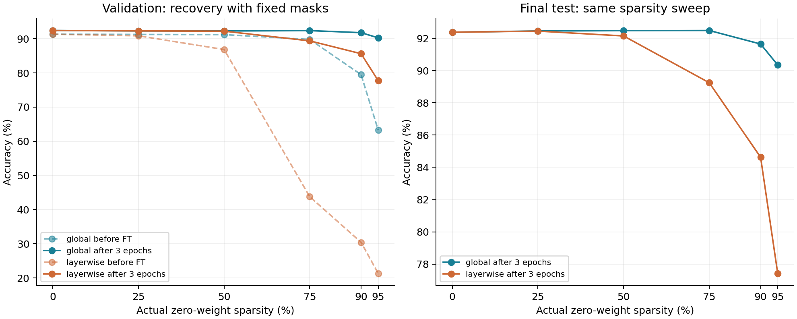
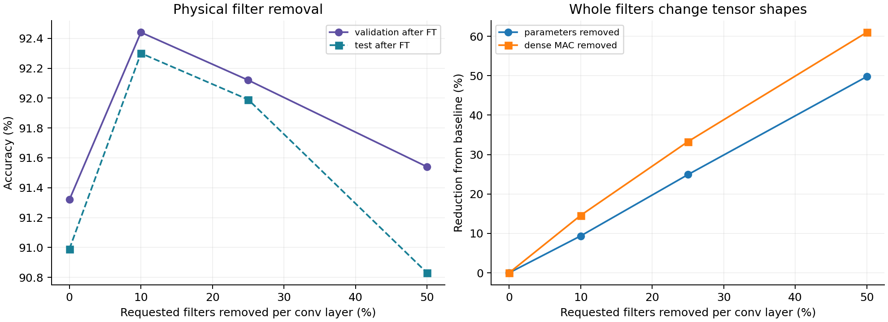
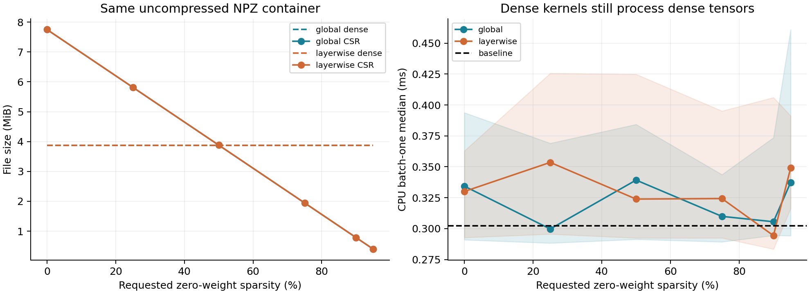
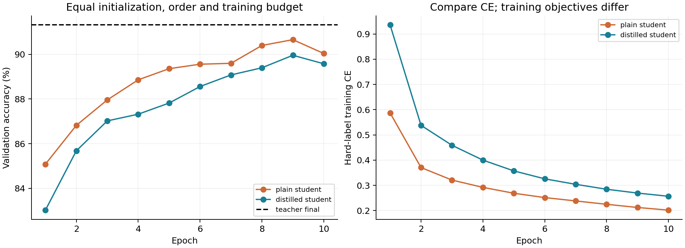
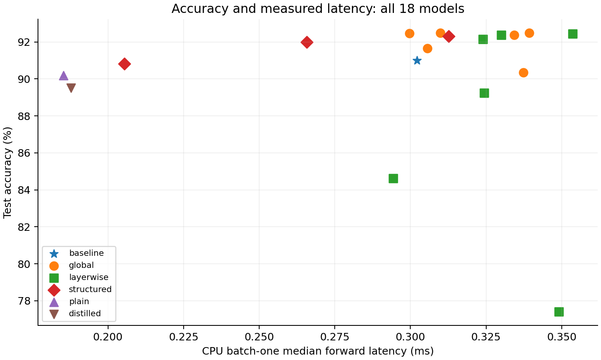

G M Robi Farhan Rojob | 73997 | 18 models, 75 full-data epochs | CPU FP32, four threads
Energy values are estimates under an assumed constant 35 W, not measurements. Unstructured models run dense kernels. Small timing differences can be noise.
Measured report / Full CSV / Raw latency / Explanation PDF
Click column headings to sort.
| Model | Test % | Parameters | Dense MiB | CSR MiB | b1 p50 ms | b1 p95 ms | MAC M | Est. mJ at 35 W |
|---|---|---|---|---|---|---|---|---|
| teacher | 90.99 | 1015370 | 3.875 | 7.752 | 0.302 | 0.550 | 2.026 | 10.57 |
| global_0 | 92.38 | 1015370 | 3.875 | 7.752 | 0.334 | 0.593 | 2.026 | 11.70 |
| global_0.25 | 92.46 | 1015370 | 3.875 | 5.817 | 0.300 | 0.548 | 2.026 | 10.49 |
| global_0.5 | 92.48 | 1015370 | 3.875 | 3.881 | 0.339 | 0.577 | 2.026 | 11.87 |
| global_0.75 | 92.49 | 1015370 | 3.875 | 1.946 | 0.310 | 0.527 | 2.026 | 10.85 |
| global_0.9 | 91.65 | 1015370 | 3.875 | 0.785 | 0.306 | 0.618 | 2.026 | 10.69 |
| global_0.95 | 90.35 | 1015370 | 3.875 | 0.398 | 0.337 | 0.629 | 2.026 | 11.81 |
| layerwise_0 | 92.38 | 1015370 | 3.875 | 7.752 | 0.330 | 0.569 | 2.026 | 11.55 |
| layerwise_0.25 | 92.45 | 1015370 | 3.875 | 5.817 | 0.354 | 0.635 | 2.026 | 12.37 |
| layerwise_0.5 | 92.15 | 1015370 | 3.875 | 3.881 | 0.324 | 0.587 | 2.026 | 11.34 |
| layerwise_0.75 | 89.25 | 1015370 | 3.875 | 1.946 | 0.324 | 0.558 | 2.026 | 11.35 |
| layerwise_0.9 | 84.63 | 1015370 | 3.875 | 0.785 | 0.294 | 0.547 | 2.026 | 10.30 |
| layerwise_0.95 | 77.42 | 1015370 | 3.875 | 0.398 | 0.349 | 0.585 | 2.026 | 12.21 |
| structured_0.1 | 92.30 | 920313 | 3.513 | 7.027 | 0.313 | 0.531 | 1.731 | 10.94 |
| structured_0.25 | 91.99 | 762426 | 2.910 | 5.822 | 0.266 | 0.470 | 1.352 | 9.30 |
| structured_0.5 | 90.83 | 510058 | 1.948 | 3.897 | 0.206 | 0.383 | 0.790 | 7.19 |
| student_plain | 90.20 | 103018 | 0.395 | 0.791 | 0.185 | 0.335 | 0.384 | 6.49 |
| student_distilled | 89.52 | 103018 | 0.395 | 0.791 | 0.188 | 0.430 | 0.384 | 6.57 |




